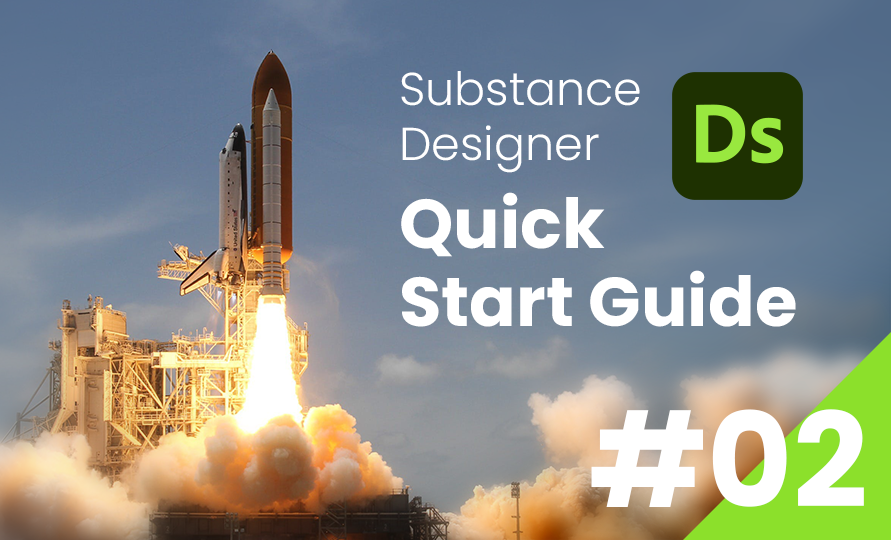

最新の記事
≫ すべて見る
SubstanceDesigner
Substance Designer クイックスタートガイド 第6回：マテリアルのエクスポート
2024/03/25

SubstanceDesigner
SubstanceDesigner PythonAPI大解読
SDSBSCompGraph：#2
2024/03/13

Unity
Python for Unity
インストール方法
2024/03/12

SubstanceDesigner
SubstanceDesigner PythonAPI大解読
SDSBSCompGraph：#1
2024/03/07

SubstanceDesigner
SubstanceDesigner PythonAPI大解読
- APIの概要 -
2024/03/03

SubstanceDesigner
Substance Designer クイックスタートガイド 第5回：ノーマル・AOマップ
2024/02/15

SubstanceDesigner
Substance Designer クイックスタートガイド 第4回：ハイトマップ
2024/02/10

SubstanceDesigner
Substance Designer クイックスタートガイド 第3回：グラフ
2024/02/06
SubstanceDesigner
Substance Designer クイックスタートガイド 第2回：ノード
2024/02/04
Python
Pythonでフォルダ構造を可視化しよう！
第2回：globモジュール
2024/02/03
SubstanceDesigner
Substance Designer クイックスタートガイド 第1回：パッケージ・グラフ
2024/02/01
Python
Pythonでフォルダ構造を可視化しよう！
第1回：osモジュールで再帰取得
2024/01/30